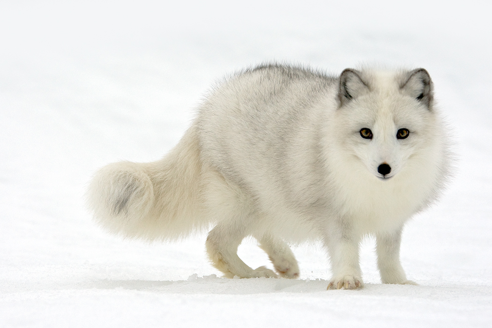
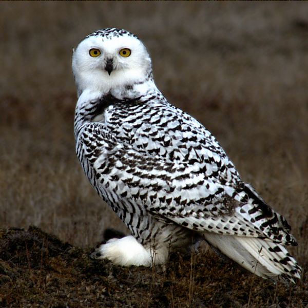

Arctic Animals!
Arctic Fox
Did you know that Artic foxes live in the Tundra Biome? Well they do! Artic foxes' fur changes depending on the season; when it's cold it's white, and when it is summer it's brown. Their lifespan is about 3-4 years.
Snowy Owl
Snowy Owls are the birds of the tundra! They are amazing creatures! Snowy Owls are the largest owls in North America. Their life span is around 9 and a half years.
Arctic Wolf
Did you know that Artic wolves are part of the gray wolf subspecies? They are also very good hunters. They live off of mostly muskox, Artic hares, and caribou!

Arctic Hare
The Arctic Hare also known as the Polar rabbit is a species of hare that tends to live in the tundra biome. They are hunted by Arctic wolves and they eat berries, buds, branches, and more. Their life span is around 5 years.